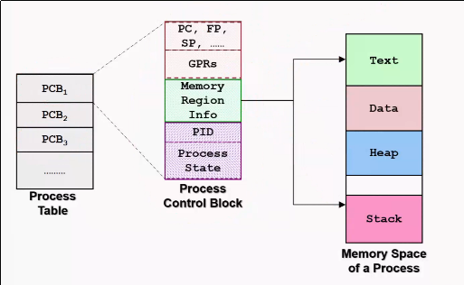
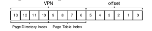

Operating Systems
Table of Contents
- 1. Operating System Key Concepts
- 2. Process
- 2.1. Process Creation
- 2.2. Function Call
- 2.3. Dynamic Memory Allocation
- 2.4. Process Identification
- 2.5. 5-state Process Model
- 2.6. Data structures required
- 2.7. Mechanism: Limited Direct Execution
- 2.8. Access Control
- 2.9. General System Call Mechanism
- 2.10. Switching between processes
- 2.11. Exception and Interrupts
- 3. Scheduling
- 4. Concurrency
- 5. Thread
- 6. Classical Synchronization Problems
- 7. Address Spaces
- 8. Free Space Management
- 9. Paging
- 10. Beyond Physical Memory
-- mode: Org; org-download-image-dir: "./images/operatingsystems/"; --
1 Operating System Key Concepts
1.1 Motivation
- Abstraction
- Presents common high level functionality to users
- Efficient and Portable
- Resource Allocator
- Program Control
- Monitor execution of program, and manage resource access privileges
1.2 Alarm signal
The alarm signal causes the operating system to suspend whatever it is doing, save its registers on the stack, and start running a special signal-handling procedure.
1.3 Identification
Each person authorized to use the OS is assigned a UID (User Identification). Each process started has the UID of the person who started it. The child process inherits the UID from the parent. Users can also be members of groups, each with a GID (Group Identification).
1.4 File systems
Before a file can be read or written, it must be opened, at which time the permissions are checked. If access is permitted, the system returns a small integer called the file descriptor to use in subsequent operations.
Special files are provided in order tomake I/O devices look like files. That way, they can be read and written using the same system calls as are used for reading and writing files. block special files are used to model devices that consist of a collection of randomly addressable blocks, such as disks. A program can open a block special file, and access a particular block to read it. character special files are used to model printers, modems and other devices that accept or output a character stream.
1.5 Pipe
A sort of pseudofile that can be used to connect two processes. If process A and B wish to talk using a pipe, they must set it up in advance.

1.6 Process segments

1.7 Files in UNIX
Every file in UNIX has a unique number, its i-number, that identifies it. The i-number is an index into a table of i-nodes, one per file, telling who owns the file, where its disk-blocks are and so one. A directory is a file containing a set of (i-number, ASCII name) pairs.
1.8 Hypervisors
In practice, the real distinction between a type 1 hypervisor and a type 2 hypervisor is that a type 2 makes uses of a host operating system and its file system to create processes, store files, and so on. A type 1 hypervisor has no underlying sup- port and must perform all these functions itself.
2 Process
A program in execution. Associated with each process is a address space. Address space is a list of memory locations from 0 to maximum in which the program can write to.
Information about all the processes are stored in the operating system table called the process table, which is an array structure, one for each process currently in existence.
A suspended process consists of its address space, and its entry in the process table, which contains the contents of the registers and other items required to resume the process later on.
2.1 Process Creation
OS needs to load its code and any static data (e.g. initialized variables) into memory, into the address space of the process. Modern OSes load these lazily, via the machinery of paging and swapping.
- Run-time stack
- Used for local variables, function parameters and return addresses
- Heap
- Dynamically allocated data, programs request this space by
calling
malloc()and free it explicitly usingfree()
- Dynamically allocated data, programs request this space by
calling
- I/O related tasks
- 3 open file descriptors:
stdin,stdoutandstderr
- 3 open file descriptors:
2.2 Function Call
2.2.1 Control Flow issues
- Need to jump to the function body
- Need to resume when the function call is done
- Minimally, need to store the PC of the caller
2.2.2 Data Storage issues
- Need to pass parameters to the function
- Need to capture the return result
- May have local variable declarations
2.2.3 Stack Memory
Define new region of memory, called stack memory, for function invocations. A new hardware register, the stack pointer, stores the current memory address of the top of the stack.
When the stack grows, the stack pointer decreases. The stack grows from bottom up. This is true for most architectures.
2.2.4 Stack Frame
The stack memory stores a bunch of stack frames, one stack frame for each function invocation. The stack frame stores:
- Local variables
- Parameters
- Return PC
- Saved Registers
- Saved Stack Pointer
- Frame Pointer
2.2.5 Function Call Convention (FCC)
There are different ways to setup stack frames. An example scheme is described below.
- Caller passes parameters with registers and/or stack
- Caller saves return PC on stack
- Transfer Control from Caller to Callee
- Callee save registers used by callee. Save old SP and FP
- Callee allocates space for local variables on stack
- Callee updates stack pointer to top of stack
Teardown:
- Callee: Restore saved registers, FP, SP
- Transfer control from callee to caller using saved PC
- Caller: Continues execution in caller
2.2.6 Frame Pointer
Stack Pointer is hard to use as it can change. Frame pointer points to a fixed location in a stack frame, and other items are accessed as offsets from the frame pointer.
2.3 Dynamic Memory Allocation
High Level Languages allow dynamic allocation of memory space, e.g.
C's malloc. These memory blocks have different behaviours. First,
they are only allocated at runtime, and hence cannot be placed in the
data region. Next, there is no definition deallocation timing, and
hence cannot be placed in the stack region.
Hence, a new region is needed, called the heap. Heap memory is a lot trickier to manage. Variable size, and allocation/deallocation timing is not known before hand.
2.4 Process Identification
To distinguish processes from each other, a process ID (PID) is assigned to each process.
2.5 5-state Process Model
- New
- The process creation is started, but has not been allocated the required resources.
- Ready
- Process is ready to run, but the OS has not chosen to run it yet.
- Running
- A process is running if it is executing instructions on the processor.
- Blocked
- Process has performed some kind of operation that makes it not ready to run until another event has taken place, e.g. being blocked by I/O.
- Terminated
- Process is finished, may require OS cleanup.

2.6 Data structures required
- Process Table
- keeps track of all processes
- PCB
- contains the entire execution context for a process

2.7 Mechanism: Limited Direct Execution
The OS must virtualize the CPU in an efficient manner, while retaining control over the system. To do so, both hardware and operating systems support will be required. The OS will often use a judicious bit of hardware support in order to accomplish its work effectively.
2.8 Access Control
In user mode, applications do not have full access to hardware resources. The OS runs in kernel mode, which has access to the full resources of the machine.
Code can request access to system resource by calling the trap call, which raises the privilege level to kernel mode. Once finished, the OS calls the return-from-trap instruction, which returns the calling user program, while reducing the privilege level back to user mode.
During bootup, the machine is started in kernel mode. The OS sets up a trap table, and informs the hardware of the location of specialised trap handlers, which is the code to run when certain exceptional events occur. One such example is the hard-disk interrupt.
2.9 General System Call Mechanism
- User program invokes the library call, using the normal function call mechanism
- Library call places the system call number in a designated location
- Library call executes a special instruction to switch from user mode to kernel mode (known as TRAP)
- Now in kernel mode, the appropriate system call handler is determined:
- Using the system call number as index
- This step is usually handled by a dispatcher
- System call handler is executed
- Control is returned to the library call, and switches from kernel mode to user mode
- Library call return to user program, via normal function return mechanism
2.10 Switching between processes
2.10.1 Cooperative Approach
Processes transfer control of the CPU to the OS by making system calls. The OS regains control of the CPU by waiting for a system call or an illegal operation of some kind to take place.
2.10.2 Non-cooperative Approach
The question is: what ca the OS do to ensure that a rogue process does not take over the machine?
The answer is: timer interrupt. A timer device is programmed to raise an interrupt at a fixed interval. Each time the interrupt is raised, a pre-configured interrupt handler in the OS runs.
At this time, the OS will decide whether to continue running the process, or switch to a different one. This is the role of the scheduler.
If the decision is to switch processes, then the OS executes a low-level piece of code which is referred to as the context switch. The OS saves a few register values for the current executing process. This includes:
- Program Counter (PC)
- Stack Pointer (Pointing to the new context)
2.11 Exception and Interrupts
Executing a machine level instruction can lead to exceptions, for example arithmetic errors.
Exceptions are synchronous, and occur due to program execution. An exception handle is executed automatically.
External events can interrupt the execution of a program. These are usually hardware related: timer, keyboard events etc.
When an exception or an interrupt handler executes, control is transferred to a handler routine automatically.
A handler does the following:
- Save Register/CPU state
- Perform Register/CPU
- Restore Register/CPU
- Return from interrupt
3 Scheduling
Assumptions made:
- Each job runs for the same amount of time
- All jobs arrive at the same time
- All jobs only use the CPU (i.e. they perform no I/O)
- The run-time of each job is known
3.1 Scheduling Metrics
- Turn-around time
3.2 First Come First Served (FCFS)
Example:
- A, B and C arrived at time T=0.
- A runs first, followed by B, then C
Average Turnaround time: (10 + 20 + 30)/3 = 20
3.2.1 Pros
Easy to implement
3.2.2 Cons
Convoy effect: a number of relatively-short potential consumers of a resource get queued behind a heavyweight resource consumer.
- E.g. A takes 100 TU, B and C 10
- Average turnaround time: (100 + 110 + 120)/3
- if instead, B and C were scheduled before A, it would be (10 + 20+ 120)/3
3.3 Shortest Job First (SJF)
Schedule the job that takes the shortest TU.
3.3.1 Pros
Optimizes for Turnaround time
3.3.2 Cons
Relies on unrealistic assumptions. For example, if A takes 100TU, and B and C takes 10 TU, but B and C arrive only shortly after A, then A will still get queued, and the turnaround time will be high (convoy problem again)
3.4 Shortest Time-to-Completion First (SRT)
Any time a new job enters the system, it determines the job that has the least time left, and schedules that one first.
3.4.1 Pros
Good turnaround time
3.4.2 Cons
Bad for response time and interactivity.
3.5 Round Robin
Instead of running jobs to completion, RR runs a job for a time slice, also sometimes called a scheduling quantum. After the time slice, the next job in the run queue is scheduled. The length of the time slice must be a multiple of the length of the timer-interrupt period.
The shorter the time slice, the better the performance of RR under the response-time metric. However, if the time slice is too short, there will be a lot of overhead, and the cost of context switching will dominate the overall performance.
3.5.1 Incorporating I/O
By treating each CPU burst as a job, the scheduler makes sure processes that are "interactive" get run frequently.
3.6 Multi-level Feedback Queue (MLFQ)
- Optimise turnaround time.
- Make the system responsive to interactive users, minimise response time.
How to schedule without perfect knowledge? (Knowing the length of the job). Many jobs have phases of behaviour, and are thus predictable.
MLFQ has a number of distinct queues, each assigned a different priority level. At any given time, a job that is ready to run is on a single queue.
- Rule 1: If Priority(A) > Priority(B), A runs
- Rule 2: If Priority(A) = Priority(B), A and B run in RR
Note that job priority changes over time.
First try at MLFQ:
- Rule 3: When a job enters the system, it is placed at the highest priority (the top most queue)
- Rule 4a: If a job uses up an entire time slice while running, its priority is reduced (it moves down one queue)
- Rule 4b: If a job gives up the CPU before the time slice is up, it stays at the same priority level.
Problems:
- starvation: if there are "too many" interactive jobs in the system, they will combine to consume all CPU time, and long-running jobs will never receive any CPU time.
- Gaming the scheduler: One can stop using the CPU right before the time slice ends, then it will maintain at top priority.
Attempt 2:
- Rule 5: After some time period S, move all the jobs in the system to the topmost queue
This solves two problems:
- Processes are guaranteed not to starve: by sitting in the top queue, a job will share the CPU with other high-priority jobs in a round-robin fashion, and will eventually receive service
- If a CPU-bound job has become interactive, the scheduler treats it properly once it has received the priority boost
Attempt 3: Instead of forgetting how much of a time slice a process used at a given level, the scheduler should keep track, once a process has used its allotment, it is demoted to the next priority queue.
- Rule 4: Once a job uses up its time allotment at a given level (regardless of how many times it has given up the CPU), its priority is reduced
3.6.1 Tuning MLFQ
- Varying time-slice length across different queues. Shorter time slices are comprised of interactive jobs, and quickly alternating between them makes sense
- The low-priority queues are CPU bound, and longer time slices work well.
3.7 Lottery Scheduling
Tickets are used to represent the share of a resource that a process should receive. Lottery scheduling achieves probabilistic fair sharing of the CPU resources.
4 Concurrency
Processes take a single physical CPU and turn it into multiple virtual CPUs, enabling the illusion of multiple programs running at the same time.
Now, we will examine the abstraction for running a single process: that of a thread.
5 Thread
The state of a single thread is similar to that of a process. It has a
program counter (PC) that tracks where the program is fetching
instructions from. Each thread has its own private set of registers it
uses for computation. If 2 threads are running on a single processor,
switching from a running one (T1) to running the other (T2) requires a
context switch. Thread Control Blocks (TCBs) store the state of
each thread of a process. Unlike the context switch for processes, the
address space for threads remain the same.

5.1 Example Thread creation
#include <stdio.h>
#include <assert.h>
#include <pthread.h>
void *mythread(void *arg) {
printf("%s\n", (char *) arg);
return NULL;
}
int main (int argc, char* argv[]) {
pthread_t p1, p2;
br int rc;
printf("main: begin\n");
rc = pthread_create(&p1, NULL, mythread, "A"); assert(rc == 0);
rc = pthread_create(&p2, NULL, mythread, "B"); assert(rc == 0);
//join waits for the threads to finish
rc = pthread_join(p1, NULL); assert (rc == 0);
rc = pthread_join(p2, NULL); assert (rc == 0);
printf("main: end");
return 0;
}
5.2 Issues with Uncontrolled Scheduling
5.2.1 Race Condition
Context switches that occur at untimely points in the execution can result in the wrong result. Because multiple threads executing this code can result in a race condition, we call this code a critical section. What's required for this code to run properly is mutual exclusion. This property guarantees that if one thread is executing within the critical section, others will be prevented from doing so.
5.2.2 Key Terms
- Critical Section
- piece of code that accesses a shared resource, usually a variable or data structure
- Race Condition
- A situation which arises if multiple threads of execution enter the critical section at roughly the same time; both attempt to update the shared data structure at the same time, leading to surprising and sometimes undesirable outcomes
- Indeterminate Program
- Consists of one or more race conditions; the output is non deterministic, something typically expected of computer programs
- Mutual Exclusion
- threads use mutual exclusion primitives to avoid the problems that concurrency yields, such as race conditions
5.2.3 The wish for atomicity
What if we had a super-instruction like this:
memory-add 0x8044a1c, $0x1
Assume this instruction adds a value to a memory location, and the hardware guarantees that it executes atomically. This would be easy if the instruction set contained only 1 instruction. However, in the general case this is not possible.
Instead, we ask the hardware for a few useful instructions upon which we can build a general set of what is called synchronisation primitives.
5.3 Thread API
#include <pthread.h>
int pthread_create (pthread_t * thread,
const pthread_attr_t* attr,
void * (*start_routine) (void *)
void * arg);
threadis a pointer to the structure of typepthread_t, used to interact with the threadattris used to specify attributes this thread might have, including setting the stack size, and scheduling priority of the thread. We can usually pass NULL in.start_routineis the function this thread should start running inargis the argumentstart_routinerequires.
int pthread_join(pthread_t trhead, void ** value_ptr);
pthread_join waits for the thread's completion.
5.3.1 Locks API
int pthread_mutex_lock(pthread_mutex_t *mutex); int pthread_mutex_unlock(pthread_mutex_t *mutex); // Usage //sets the lock to default values, making the lock usable pthread_mutex_t lock = PTHREAD_MUTEX_INITIALIZER; // dynamic way to do it is to make a call: int rc = pthread_mutex_init(&lock, NULL); assert (rc == 0); //always check success! pthread_mutex_lock(&lock); // Critical section x = x + 1; pthread_mutex_unlock(&lock);
int pthread_mutex_trylock(pthread_mutex_t *mutex);
int pthread_mutex_timedlock(pthread_mutex_t *mutex,
struct timespec *abs_timeout);
These two calls are used in lock acquisition. trylock returns
failure if the lock is already held, and timedlock returns after a
timeout or after acquiring the lock, whichever happens first.
5.3.2 Condition Variables
int pthread_cond_wait(pthread_cond_t *cond, pthread_mutex_t *mutex); int pthread_cond_signal(pthread_cond_t *cond);
condition variables are useful when some kind of signalling must take place between threads.
pthread_mutex_t lock = PTHREAD_MUTEX_INITIALIZER;
pthread_cond_t init = PTHREAD_COND_INITIALIZER;
int rc = pthread_mutex_lock(&lock); assert(rc == 0);
while (initialized == 0) {
int rc = pthread_cond_wait(&init, &lock);
assert (rc == 0);
}
pthread_mutex_unlock(&lock);
//Some other thread
pthread_mutex_lock(&lock);
initialized = 1;
pthread_cond_signal(&init);
pthread_mutex_unlock(&lock);
5.4 Properties of Correct CS Implementation
- Mutual Exclusion
- If process P1 is executing in critical section, all other processes are prevented from entering the critical section
- Progress
- If no process is in a critical section, one of the waiting processes should be granted access
- Bounded Wait
- After process p1 request to enter critical section, there exists an upperbound of number of times other processes can enter the critical section before p1
- Independence
- Process not executing in critical section should never block other process
5.5 Locks
Calling the routine lock() tries to acquire the lock; if no other
thread holds the lock, the thread will acquire the lock and enter the
critical section; this thread is sometimes said to be the owner of
the lock.Once the owner of the lock calls unlock(), the lock in
now available again. If no othre threads are waiting for the lock
(i.e. no other thread has called lock() and is stuck), the state of
the lock is simply changed to free, if thee are waiting threads, one
of them will acquire the lock.
5.5.1 Pthread Locks
The name that the POSIX library uses for a lock is a mutex, as it is used to provide mutual exclusion between threads. Different locks can be initialized to protect different critical sections.
5.5.2 Evaluating locks
- mutual exclusion
- does the lock work, preventing multiple threads from entering a critical section?
- fairness
- Does each thread contending for the lock get a fair shot?
- performance
- Are the time overheads added by using the lock significant?
5.5.3 Approach 1: Controlling Interrupts
Using a special hardware instruction, turn off all interrupts during critical section:
void lock() {
DisableInterrupts();
}
void unlock() {
EnableInterrupts();
}
5.5.3.1 Pros
- Simplicity
5.5.3.2 Cons
- Requires calling thread to perform a privileged operation
- Doesn't work on multiprocessor systems
5.5.4 Approach 2: Test and Set
Hardware support for atomicity was created. This is known as the test-and-set instruction, or atomic exchange.
The idea is to use a variable to indicate whether some thread has
possession of a lock. Calling lock() then tests and sets that variable.
However, this presents several issues:
- No Mutex!
- The thread waiting to acquire a lock is endlessly checking for the value of flag, a technique known as spin-waiting, which wastes time waiting for another thread to release a lock.
With hardware support for test-and-set, we achieve mutex, and have a spin lock! To work correctly on a single processor, it requires a preemptive scheduler, one that will interrupt a thread via atimer, in order to run a different thread, from time to time.
5.5.4.1 Evaluating the spin lock:
- correctness
- YES
- fairness
- NO, a thread may spin forever under contention
- performance
- NO, high performance overheads
Other hardware primitives one can use to write locks:
- LoadLinked and StoreConditional
- Fetch-And-Add (ticket lock)
5.5.5 Two Phase Locks
A two-phase lock realises that spinning can be useful, particularly if the lock is about to be released. In the first-phase, the lock spins for a while, hoping that it can acquire a lock. However, if the lock is not acquired during the first phase, the second phase is entered, where the caller is put to sleep, and only woken up when the lock becomes free later.
6 Classical Synchronization Problems
6.1 Producer/Consumer
Producers and Consumers share a bounded buffer K
Blocking Version contains 3 semaphores:
- Binary semaphore (initialized to 1) [mutex]
- !Full (initialized to 4) [!Full]
- !Empty (initialized to 0) [!Empty]
//Producer
while (TRUE) {
Produce Item;
wait(notFull);
wait(mutex);
buffer[in] = item;
in = (in + 1) % K;
count++;
signal(mutex);
signal(notEmpty);
}
// Consumer
while (TRUE) {
wait(notEmpty);
wait(mutex);
item = buffer[out];
out = (out + 1) % K;
count--;
signal(mutex);
signal(notFull);
Consume Item;
}
6.2 Readers/Writers
Processes share a data structure D
- Reader: Retrieves information from D
- Writer: Modifies information from D
- Writer must have exclusive access
- Readers can read with other readers
while (true) {
wait(roomEmpty);
//Modifies data;
signal(roomEmpty);
}
while (true) {
wait(mutex);
nReader++;
if (nReader == 1) {
wait(roomEmpty);
}
signal(mutex);
// Reads data;
wait(mutex);
nReader --;
if (nReader == 0) {
signal(roomEmpty);
}
signal(mutex);
}
6.3 Dining Philosophers
Philosophers sitting in a circle, requiring resource from both left and right side.
6.3.1 Tanenbaum Solution
#define N 5
#define LEFT i
#define RIGHT ((i+1)%N)
#define THINKING 1
#define HUNGRY 1
#define EATING 2
int state[N];
void philosopher(int i) {
while(true) {
think();
hungry();
takeChpStcks(i);
eat();
putChpStcks(i);
}
}
void takeChpStcks(i) {
wait(mutex);
state[i] = HUNGRY;
safeToEat(i);
signal(mutex);
wait(s[i]);
}
void safeToEat(i) {
if (state[i] == HUNGRY &&
state[LEFT] !=EATING &&
state[RIGHT] != EATING) {
state[i] = EATING;
signal(s[i]);
}
}
void putChpStcks(i) {
wait(mutex);
state[i] = THINKING;
safeToEat(LEFT);
safeToEat(RIGHT);
signal(mutex);
}
7 Address Spaces
While saving and storing register-level state is relatively fast, saving the entire contents of memory to disk is non-performant. We'd rather leave processes in memory while switching between them, allowing the OS to implement time sharing efficiently.
The OS will need to create an easy to use abstraction of physical memory. This abstraction is called the address space.
7.1 Goals of Virtual Memory
- transparency
- invisible to the running program, and the program behaves as if it has its own private virtual memory
- efficiency
- time and space efficient, via hardware support such as TLBs.
- protection
- protects processes from one another, delivering the property of isolation among processes.
7.2 Types of Memory
- stack memory
- allocations and de-allocations are handled implicitly by the compiler
- heap memory
- allocations and de-allocations are explicitly handled by programmer
7.3 Address translation
The hardware transforms each memory access, changing the virtual address provided by the instruction to a physical address where the desired information is actually located.
7.4 1950's base and bounds technique
2 hardware registers in each CPU: the base register, and the bounds register. This pair allows the placement of address space anywhere in physical memory, and do so while ensuring that the process can only access its own address space.
The OS decides where in physical memory it should be loaded, and sets the base register to that value.
Any memory reference generated by the process is translated:
\( physical address = virtual address + base \)
Because this translation is done at runtime, this technique is also known as dynamic relocation.
- The OS must take action when a process is created, searching a data structure to find room for the new address space and then mark it used.
- The OS must take action when a process is terminated, reclaiming all of the memory is use.
- OS must take action when a context switch occurs. This is because there is only one base and bounds register, and their values differ for each running program.
- Access to the base and bounds register is privileged, and special hardware instructions are required.
Dynamic relocation is inefficient. If the space inside the allocated unit is not all used, it is wasted, and this is called internal fragmentation.
7.5 Segmentation
A segment is a contiguous portion of the address space of a particular length. We have 3 logically-different segments: code, stack and heap. The OS can place each of these segments in different parts of physical memory, and avoid filling physical memory with unused virtual address space.
To support segmentation of this form, the Memory Management Unit (MMU) has, instead of one, 3 base and bounds register pairs
When an illegal address is accessed, the hardware detects that the address is out of bounds, and the OS terminates the offending process with a segmentation fault.
To figure out which segment to use, bits in the virtual address are often reserved. This is the virtual address 4200 in binary form:

The hardware would need to know how the segments grow to translate virtual address differently. In the case of the stack, a negative offset is added to the base to calculate the correct physical address.
7.6 Sharing
To save memory, it useful to share certain memory segments, like the code segment.
To support sharing in a safe way, protection bits are added per segment, indicating whether or not a program can read or write to a segment.

7.7 OS support
Physical memory quickly becomes full of little holes of free space, making it difficult to allocate to new segments, or grow existing ones. This is external fragmentation.
One solution is to compact physical memory by rearranging the existing segments. However, compaction is expensive as copying segments is memory intensive and require processor time.
One approach is to use a free-list management algorithm that tries to keep large extents of memory for allocation. Algorithms include:
- Best-fit
- Worst-fit
- First-fit
- Buddy System
8 Free Space Management
A free list contains a set of elements that describe the free space still remaining in the heap. To track the size of allocated regions, the header contains the size of the allocated region.
typedef struct __header_t {
int size;
int magic;
}
8.1 Growing the Heap
Traditional allocators start of with a small heap. When more memory is
required, the sbrk system call is made to request for more memory.
The OS finds free physical pages, maps them to the address space of
the requesting process, and returns the value of the end of the new heap.
8.2 Free Space Allocation Strategies
8.2.1 Best fit
- Search the free list and find chunks of free memory that are as big or bigger than the requested size
- Return the smallest chunk
Naive implementations are slow because of the exhaustive search required to find the correct free block.
8.2.2 Worst fit
- Find the largest chunk
- Return the requested size, keeping the remaining chunk on the free list
Exhaustive search is also required to determine the largest chunk, and studies have shown this still leads to excess fragmentation.
8.2.3 Next Fit
- Keep an extra pointer to the location within the list where one was looking last
- Spread searches for free space throughout the list more uniformly
Performance similar to first fit.
8.2.4 Segregated Lists
If a particular application has one (or a few) popular-size requests that it makes, keep a separate list just to manage objects of that size; all other requests are forwarded to a more general memory allocator.
When the kernel boots up, it allocates a number of object caches for kernel objects that are likely to be requested frequently.
8.2.5 Buddy Allocation
Free memory is conceptually thought of as one big space of size \(2^N\).
When a request is made, search for free space recursively divides free space into 2 until a block big enough to accommodate the result is found.
Here is an example of a 64KB free space getting divided in the search for a 7KB block:

This scheme can suffer from internal fragmentation. Upon freeing a block, the allocator checks its buddy and sees if the block is still free. If so, it can coalesce the 2 blocks.
9 Paging
Instead of splitting the address space into logical segments, we split it into fixed-sized units called a page.
With paging, physical memory is also split into a number of pages, and these pages are called page frames.
To record where each virtual page of the address place is placed in physical memory, the OS keeps a per-process data structure known as a page table. The page table stores address translations for each of the virtual pages of the address space.
9.1 Address Translation
To translate a virtual address, the address is split into 2 components:

- virtual page number (VPN)
- offset within the page
Suppose the page size is 16 bytes, in a 64-byte address space. We need to be able to select 4 pages, and the first 2 bits of the address can do just that, giving us a 2 bit VPN.
9.2 Inside Page Tables
The simplest form of a page table is the linear page table, which is an array. The OS indexes the array by the VPN and looks up the page-table entry (PTE) at that index in order to find the desired Physical Frame Number (PFN).
Within each PTE, a number of different bits are stored.
- valid bit
- indicates whether a particular transaction is valid. This is crucial for supporting a sparse address space.
- protection bit
- indicating whether a page can be read from, written to, or executed from.
- present bit
- indicates whether this page is in physical memory or in disk (swapped out).
- dirty bit
- indicates whether a page has been modified since it was brought into memory.
- reference bit
- track whether a page has been accessed, and can be useful in deciding which pages to swap out (e.g. swapping out the least popular pages).

9.3 How Paging Works
Examine the following instruction: movl 21, %eax. We assume the
hardware performs the translation.
- The system fetches the proper page table entry from the process's page table. To know the location of the page table, the system looks at the page-table base register, containing the address of the page table.
- The system translates the virtual address (21) to the correct physical address:
VPN = (VirtualAddress & VPN_MASK) >> SHIFT PTEAddr = PageTableBaseRegister + (VPN * sizeof(PTE))
In this example, VPN_MASK would be set to 0x30, or 110000 in binary,
to extract the VPN bits. Once the PFN is obtained from the page table,
it is left-shifted, and OR'd with the offset to form the final address.
Notice each memory reference requires performing one extra memory reference, which is very costly.
9.4 Speeding up Paging with TLBs
Paging alone shows high performance overheads. This is because the mapping information is generally stored in physical memory, and requires an extra memory lookup for each virtual memory address.
To speed up address translation, a hardware feature called tranlation-lookaside buffer, or TLB, is added.
A TLB is a part of the chip's memory management unit (MMU), and is a hardware cache of popular virtual-to-physical address translations.
9.4.1 TLB Basic Algorithm
We first look up the virtual address in the TLB. If it exists in the TLB, then it is a TLB Hit, and the PFN is extracted from the TLB.
If the CPU does not find the translation in the TLB, this is a TLB miss. The hardware accesses the page table to find the translation, and updates the TLB.
TLB performance gains benefit from:
- Spatial locality: e.g. elements in an array are packed into the same page, so only the first access is a TLB miss.
- Temporal locality: elements accessed recently are more likely to be accessed again.
9.4.2 Managing TLB Misses
Old architectures had hardware -managed TLBs, where the hardware new exactly where the page tables were located (via registers), the page table's exact format: the hardware would "walk" the page table and find the correct page-table entry.
Newer architectures have a software-managed TLB. On a TLB miss, the hardware raises an exception, which pauses the instruction stream, raises the privilege level to kernel mode, and jumps to a trap handler.
The primary advantage of software-managed TLBs is flexibility. The OS can use any data structure to implement the page table, without hardware change. The hardware also doesn't do much on a TLB miss: it simply raises an exception, and the OS TLB miss handler will handle the rest.
9.4.3 Handling Context Switches
The VPN-PFN mapping for different processes are different, and the TLB will need to account for context switching.
One approach is to flush the TLB on context switches. However, each time a process runs or resumes, it will incur TLB misses.
To reduce this overhead, some systems provide an address space identifier (ASID) in the TLB. the ASID acts as a process identifier, like the PID but with fewer bits.

9.4.4 TLB Replacement Policies
- Least Recently Used (LRU)
- takes advantage of locality
- Random
- no weird corner cases that have pessimal behaviour
9.5 Making Page Tables Smaller
Simple array-based page tables are too big, taking up too much memory on physical systems.
9.5.1 Bigger Pages
Using larger pages will lead to a reduction in the number of page entries required, and reduce the size of the page table. However, this leads to a lot of wastage in each page (internal fragmentation).
9.5.2 Paging and Segments
Instead of having a single page table for the entire address space of the process, have on per logical segment.
The virtual address now looks like this:

The downsides for segmentation apply: segmentation is not flexible, and if the heap is rarely used, for example, then there is wastage.
9.5.3 Multi-level Page Tables

A new data structure called the page directory is introduced. the page directory consists of a number of page directory entries (PDE). A PDE has minimally a valid bit and a page frame number.
The page directory only allocates space proportional to the amount of address space being used, and is generally compact and supports sparse address spaces.
With the page directory, the added level of indirection allows us to place pages anywhere in physical memory. However, on a TLB miss, two loads from memory will be required to get the right translation information from the page table. Hence, there is a time-space tradeoff.

To extend this idea to multi-level page tables, we can partition the VPN even further:

9.5.4 Inverted Page Tables
Instead of having one page table per process, we can have a single page table for each physical physical page of the system.
Finding the correct entry is expensive via a linear scan, and hash tables are often built over the base structure to speed lookups.
10 Beyond Physical Memory
Sometimes the address space of a running process does not fit into memory. In that case, we require an additional level in the memory hierachy, some place to stash portions of the address space that is currently not in use. We call this the swap space.
10.1 Mechanisms
10.1.1 Swap Space
Swap space is some space on disk reserved for moving pages back and forth. The OS will need to memorise the disk address of a given page.
The size of the swap space determines the number of pages it can stash.
10.1.2 The Present Bit
When a TLB miss occurs, the OS will have to look at the swap space before to find if the page is present in physical memory.
When the hardware looks in the PTE, it may find that the page is not present in physical memory. We have to add one new piece of information in the PTE, called the present bit. If the present bit is set to one, then the page is present in physical memory and everything proceeds as above. If it set to 0, the page is on disk somewhere. Accessing a page not in physical memory is commonly referred to as a page fault.
Upon a page fault, the OS will run the page-fault handler, and fetch the page from disk and load it into memory. The OS will then update the page table to mark the page as present, and update the PFN field of the PTN to record the in-memory location of the newly fetched page.
10.1.3 Page-replacement Policy
When memory is full, upon a page fault, the OS will have to decide which page in the memory to kick out. This replacement policy is known as the page-replacement policy.
Below is the page-fault control algorithm:
PFN = findFreePhysicalPage();
if (PFN == -1) { /* can't find free page */
PFN = EvictPage(); /* Evict some old page */
}
DiskRead(PTE.diskAddr, PFN); /* sleep, waiting for IO */
PTE.present = true;
PTE.PFN = PFN;
RetryInstruction();
10.1.4 When Replacements Really Occur
The OS actively keeps a small portion of memory free. To do this, the OS maintains a high watermark (HW) and a low watermark (LW). When the OS notices that there are fewer than LW pages available, a background thread runs, freeing memory. This is sometimes called a swap daemon or a page daemon.
Many systems cluster a number of pages and write them at once to the swap partition.
With the addition of a page daemon, the control flow algorithm can be changed. The thread trying to read a page would simply wait for the page daemon free up enough memory if the LW threshold is hit.
10.2 Policies
The main memory can be viewed as a cache mechanism. Knowing the number of cache hits and cache misses allows us to calculate the average memory access time (AMAT) of a program. An optimal page-replacement policy will reduce the number of cache misses overall. The approach would be to replace the page that will be accessed furthest in the future.
The first few accesses when the cache begins in an empty state is a cold-start miss.
10.2.1 FIFO
In FIFO replacement, pages are placed in a queue when they enter the system, and when a replacement occurs, the page on the tail of the queue is evicted.
10.2.1.1 Belady's anomaly
One would normally expect the cache hit rate to increase when the cache gets larger. However, with FIFO, it gets worse, and this phenomenon is called Belady's anomaly. LRU has the stack property: for algorithms with this property, a cache of size N+1 naturally includes the contents of a cache of size N. FIFO and Random (among others) do not obey this stack property.